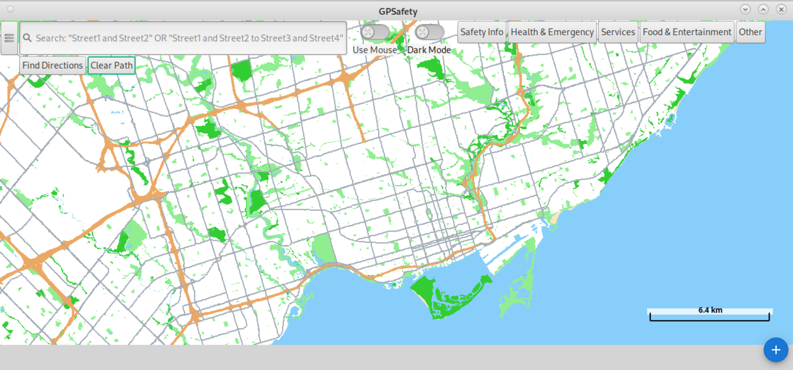
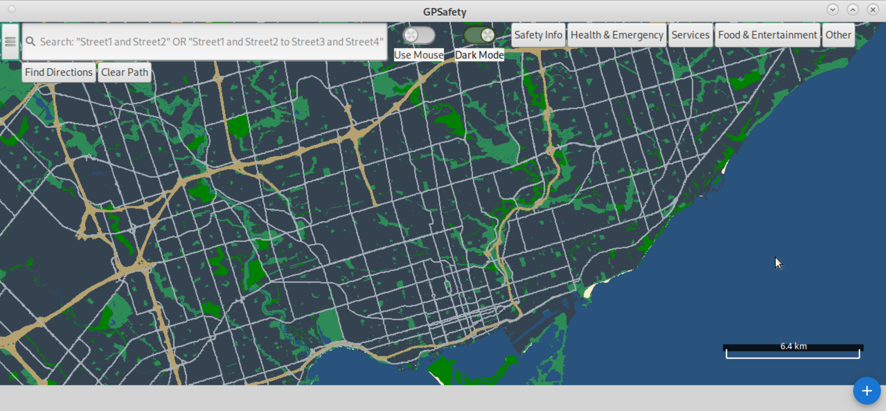
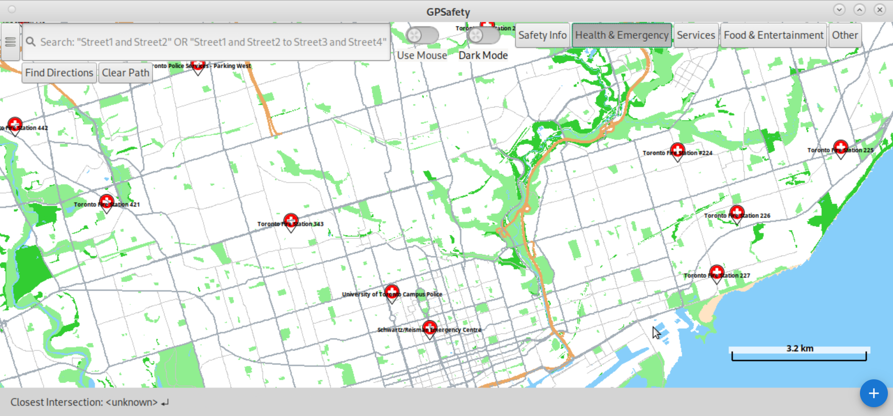
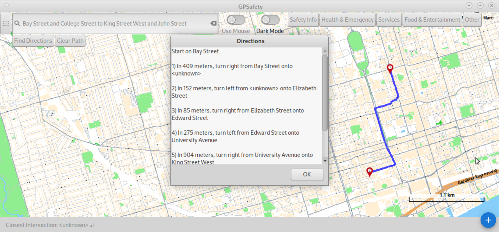
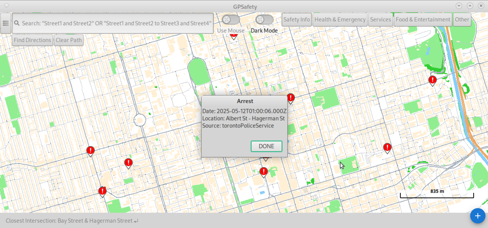

Overview
GPSafety is a Geographic Information System (GIS) project built in C++ that highlights crime hotspots in Toronto using OpenStreetMap and real-time data from the Toronto Police Service API. Unlike conventional navigation tools that optimize for speed, GPSafety prioritizes safety by guiding users away from high-risk areas.
Features
The project was developed in four milestone phases, each building on the previous:
- Milestone 1: Data Structures
- Built efficient map-loading structures from OpenStreetMap data.
- Milestone 2: Graphics
- Designed an interactive UI with map rendering and POI visualization.


- Milestone 3: Path Finding — Used A* algorithm to compute shortest paths between intersections.
- Milestone 4: Courier Optimization — Solved multi-stop delivery with simulated annealing + 2-opt optimization.

Safety Alerts

Real-time crime alerts pulled hourly from the TPS Calls API are shown directly on the map as hotspot overlays.
R. Durant, “Tpscalls.live,” tpscalls.live, https://www.tpscalls.live/ (accessed Mar. 10, 2025).
Future Development
- Live Route Sharing: Allow users to share their active path with friends/family in real-time.
- Global Crime Integration: Expand safety feature beyond Toronto to other cities.